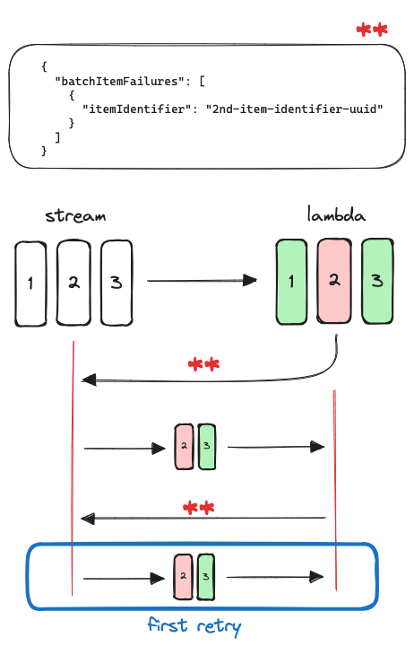
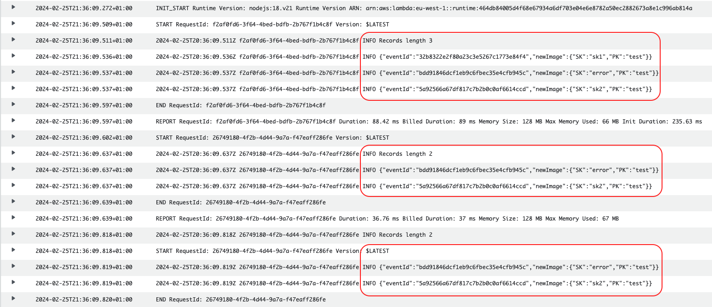
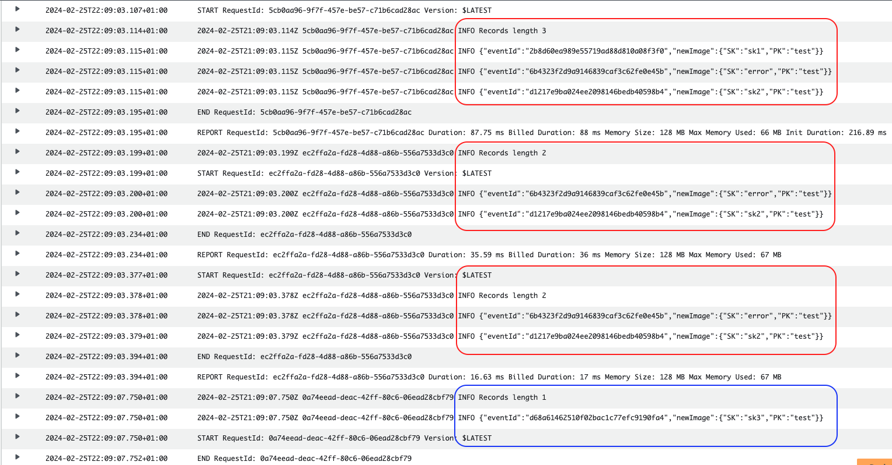
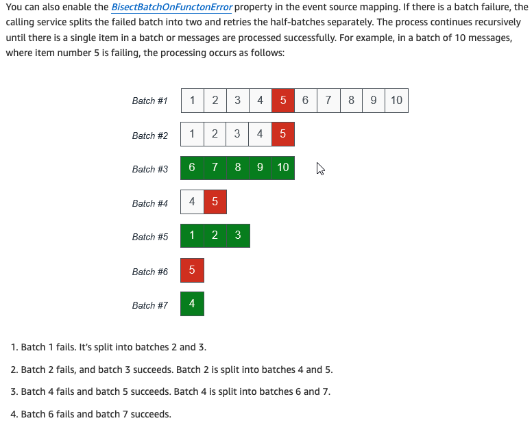
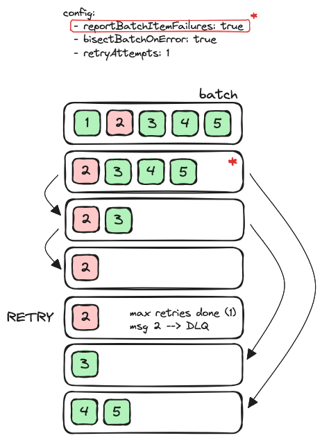
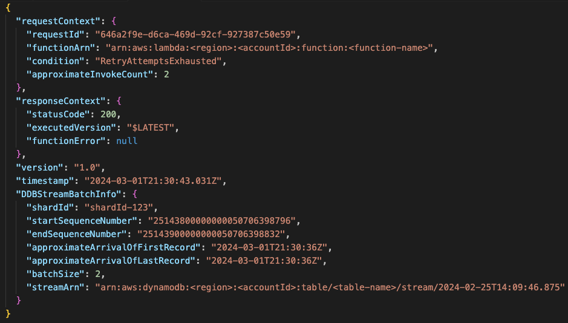

Event source configuration
-
For DynamoDB (as well as SQS) the default batching window is 0 seconds
For Kinesis, DynamoDB, and Amazon SQS event sources: The default batching window is 0 seconds. This means that Lambda sends batches to your function only when either the batch size is met or the payload size limit is reached.
If you configure a batching window, the next window begins as soon as the previous function invocation completes.
-
For Kinesis and DynamoDB streams, an event source mapping creates an iterator for each shard in the stream and processes items in each shard in order
-
If an error is returned, the whole batch is reprocessed until the function succeed or the items in the batch expire. To ensure in-order processing, the event source mapping pauses processing for the affected shard until the error is resolved
Failure behaviour
In case of error, the whole batch will be reprocessed. When would it stop retrying?
- A successful exit (lambda completes execution without errors)
- Configure in the
DynamoEventSourcea maximum of retry attempts - Configure in the
DynamoEventSourcethe max record age. This, by default, is 24 hours for DynamoDB streams
The default behaviour could be dangerous, as retryAttempts’s default value is to retry until the record expires, which would be 24 hours. If this happens, the following items to be processed in the shard would be stuck until the expiration of the record.
That’s why it’s critical to configure reporting batch item failures and even bisecting the batch.
Batch item failure
Set reportBatchItemFailures as true in the DynamoEventSource configuration. The identifiers of those failed records should be returned. If unfamiliar with this, give a read to the following article.
For this to succeed, the ids of the failed records need to be returned in the lambda response. This can be self-managed or delegated to Lambda Powertools Batch.
Example Three records, the second fails. The identifier of that record will be returned. The stream will identify the lowest sequence number out of those item identifiers received (only one in this case) and retry from there, meaning that the following batch would contain the records 2 and 3. Retries are counted for the same batch being re-sent.

With the following configuration:
testFunction.addEventSource(new DynamoEventSource(table, {
batchSize: 3,
retryAttempts: 1,
startingPosition: StartingPosition.TRIM_HORIZON,
maxBatchingWindow: Duration.seconds(5),
filters: [
FilterCriteria.filter({
eventName: FilterRule.isEqual('INSERT'),
}),
],
reportBatchItemFailures: true,
}));And inserting three items forcing the second one to fail, the behaviour explained in the image can be seen:

At that stage, since the retries would have been exhausted (1), the records would not be processed again. If a DLQ is configured, a message about this failed batch would be sent. More information about this message in the section On failure DLQ.
The shard would continue with following records.

Bisect batch on function error
It’s possible to add this configuration in the event source mapping:
testFunction.addEventSource(new DynamoEventSource(table, {
...
bisectBatchOnError: true,
}));Extracted from AWS Compute Blog by James Beswick:

reportBatchItemFailures + bisectBatchOnError
But how would it behave if combining both settings? Quote from bisect on batch error - AWS docs:
If your invocation fails and
BisectBatchOnFunctionErroris turned on, the batch is bisected regardless of yourReportBatchItemFailuressetting.When a partial batch success response is received and both
BisectBatchOnFunctionErrorandReportBatchItemFailuresare turned on, the batch is bisected at the returned sequence number and Lambda retries only the remaining records.
The following image represents the batches that are sent to the lambda given a failure in one of the records.

The main difference would be that only the record that has consistently failed in all attempts (record 2) would be sent to the DLQ - if configured. If we compare it with the behaviour in section batch item failure, it’s possible to see that in that case the DLQ would have received two records, since no bisecting was taking place.
On failure DLQ
In the image it’s possible to see an example of what is received in the DLQ when a batch with two records is redirected there. This could happen when not having active the bisectBatchOnErrorconfiguration.
What is received in the DLQ:
 Note that if only receiving one failed record in the DLQ message the differences would be:
batchSize: 1startSequenceNumberandendSequenceNumberhold the same value
This message contains no data that could give a clue of what went wrong. To get some information, it’s necessary to obtain it from the stream. If this is not done before the record expires (in the stream), then the data will be lost - 24h is the default configuration for a DynamoDB stream. This could be achieved by hydrating the event data, as explained by Yan Cui.
Retry attempts
Extracted from the documentation: default configuration is to retry until the event expires (-1) and if given a value, it has to be between 0 and 10k.
Unexpected behaviour could happen if bisectBatchOnError is configured, since it would split the failed batch and retry, even if setting retryAttempts to zero. An example of this can be found here.
Remember that retries are only counted when the same batch is sent again.
Retrying with smaller batches isolates bad records and works around timeout issues. Splitting a batch does not count towards the retry quota.
All the examples are based on processing all records in a batch at least once, even if some failed.
This could be handled differently if trying to minimize the number of times a successful message is reprocessed or if the order of execution is relevant. If using Lambda Powertools Batch, the processor BatchProcessorSync could be used.
References
- Report batch item failures - AWS Compute Blog - James Beswick
- Event source mapping batching behaviour
- Lambda powertools batch item failures
- Serverless Guru lambda integration retries table
- Bisect on batch error - AWS docs
- Stream partial failures, complete explanation - Marcin Sodkiewicz
- Retry attempts
- Dynamo Streams records retention period
- Hydrate failed record messages onFailure - Yan Cui
- How do I troubleshoot DynamoDB Streams in my Lambda functions?